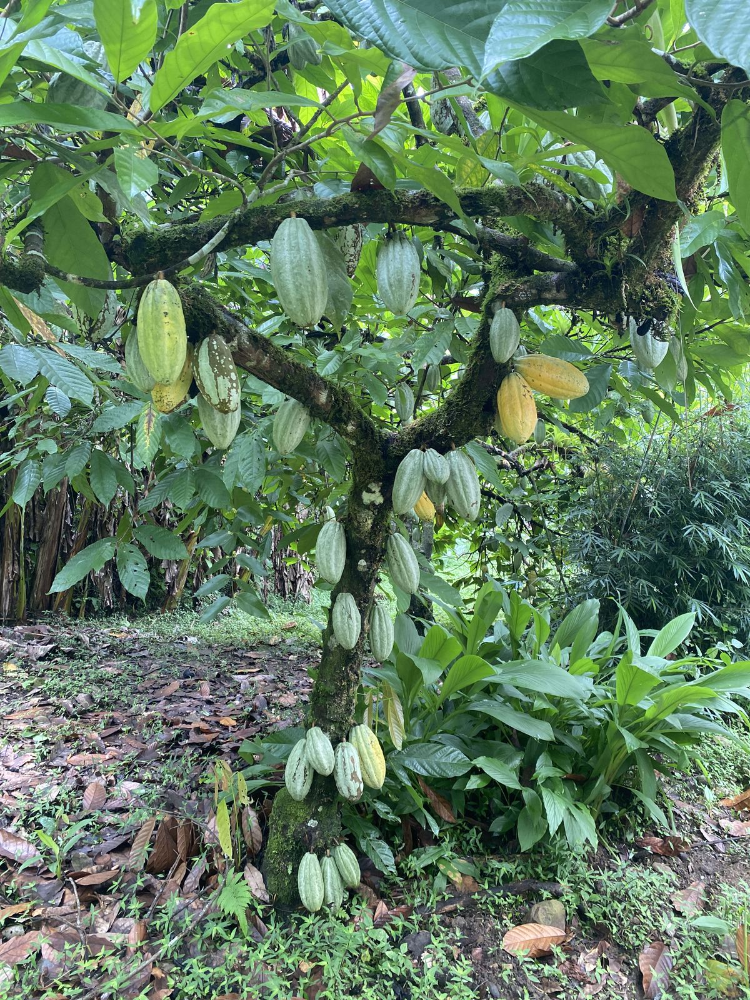
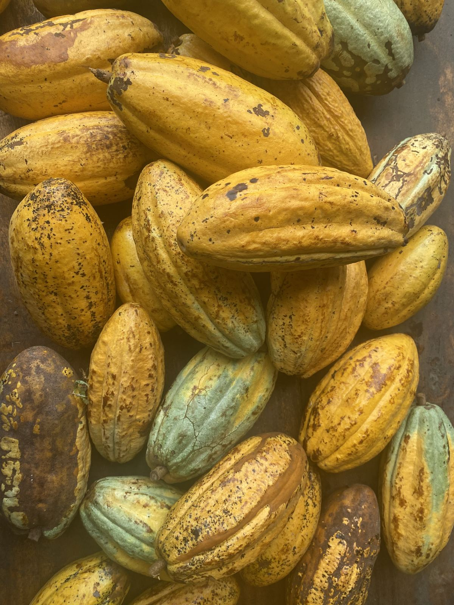
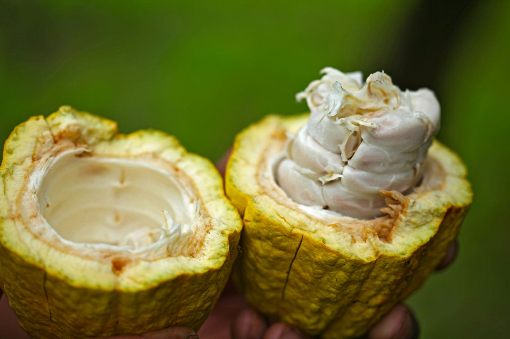
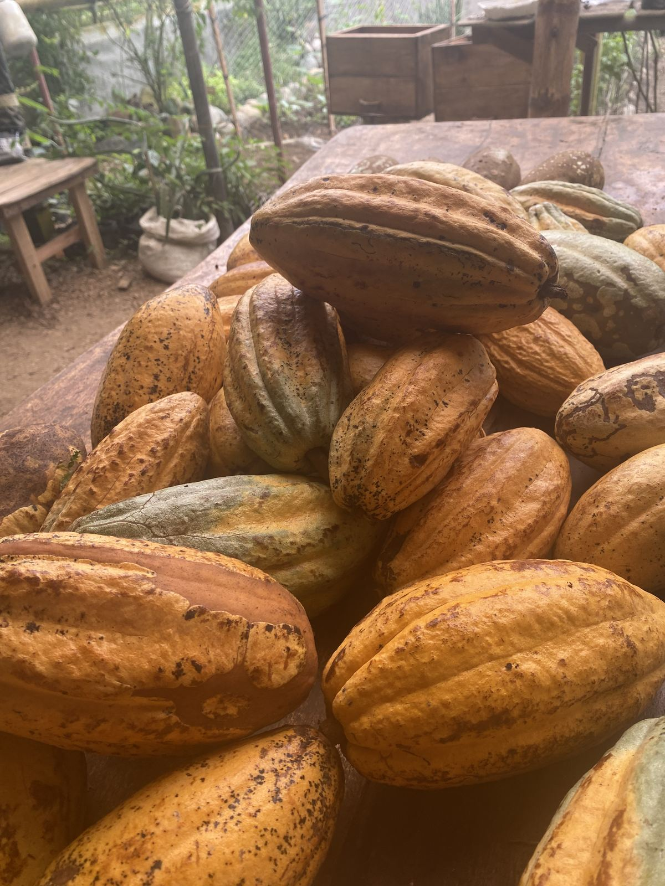
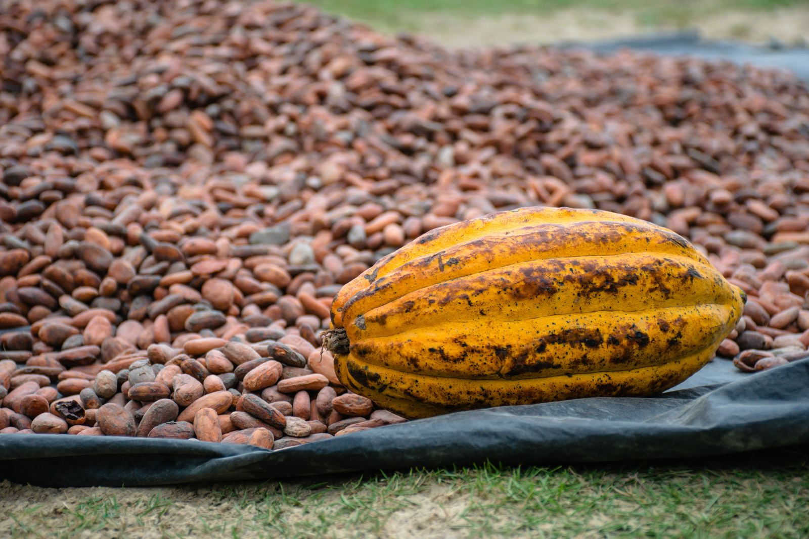
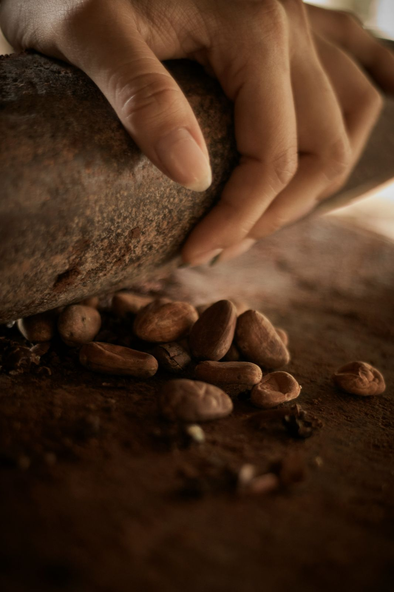

The Process
How Ceremonial Cacao Is Made
Every batch follows the same path: ripened on the tree, harvested by hand, fermented in its own pulp, sun-dried, and stone-ground into a pure paste. No shortcuts, nothing industrial.

On the Tree
Cacao pods start green and stay on the tree until they're ready.
A cacao pod can take five to six months to mature, and for most of that time it stays a deep green, blending into the leaves around it. We leave it there. A pod is only picked once it has turned yellow or orange, the color that signals the beans inside are fully ripe, never before.
Picking early means pale, underdeveloped beans and a thinner, flatter cup. Patience is the first ingredient in good cacao.

Harvesting
Each ripe pod is cut by hand, one at a time.
Once a pod turns, it's cut from the trunk or branch with a machete, close enough to the stem to avoid damaging the flower cushion the tree needs to produce its next pods. There's no mechanical harvesting here: every pod is checked and chosen individually, then carried down in baskets to be opened the same day.

Opening the Pod
Inside every pod: beans wrapped in sweet white pulp.
The pods are cracked open by hand, revealing rows of beans packed inside a thick white pulp. That pulp, not the bean itself, is what gives cacao its first sweetness. The beans are scooped out still coated in it, pulp and all, because that pulp is exactly what the next step needs.

Fermentation
The beans ferment wrapped in banana leaves, in nothing but their own pulp.
The fresh beans, still coated in pulp, are wrapped in banana leaves and left to ferment for several days. No water, no additives, just the beans and the sugars already inside their own pulp. The heat that builds up inside the wrapped leaves is what starts breaking the pulp down, and it's where the beans begin developing the deeper flavor that raw cacao doesn't have yet.
The leaves are checked and the beans turned periodically so fermentation happens evenly throughout.

Drying
Beans are spread out and dried slowly in the sun.
After fermentation, the beans are spread out in the sun, usually for around a week, and turned by hand throughout the day so they dry evenly. This slow, natural drying brings the moisture down to a level where the beans can be stored safely without mold, while keeping what's inside them intact. Nothing is rushed with machine heat.

Grinding
The dried beans are stone-ground into a pure paste.
Once dry, the beans are lightly toasted and then ground between traditional stone mills until they melt into a smooth, dark paste, nothing added, nothing taken away. That paste, poured and cooled, is the ceremonial cacao you receive: the same bean, the same pulp, the same hands, from forest to cup.